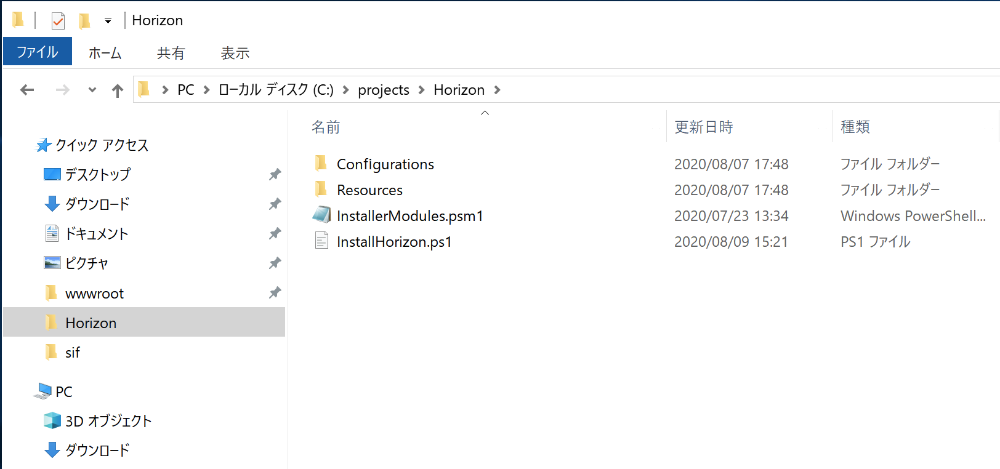

4.1. Horizon エディター¶
Sitecore Experience Platform で利用できる新しい編集ツール、Horizon エディターのインストール方法に関して紹介をしています。
4.1.1. システムの追加機能¶
Horizon エディターは、 ASP.NET Core 2.1.18 以降のランタイムが必要となります。ランタイムが入っていない場合は、以下のページから該当モジュールをダウンロード、インストールしてください。
- https://dotnet.microsoft.com/download/dotnet-core/2.1
ASP.NET Core 2.1 Runtime (v2.1.18) - Windows Hosting Bundle
Horizon エディターを利用するにあたって、WebSocket プロトコルを IIS にインストールする必要があります。インストールの手順は以下の通りです。
サーバーマネージャーを起動します
メニューから 「管理」ー「役割と機能の追加」を選択します
{kind=link}
サーバーの役割まで進めて、「Web サーバー（IIS)」 - 「Web サーバー」 - 「アプリケーション開発」 - 「WebSocket プロトコル」を選択します。
{kind=link}
ウィザードを実行して環境の設定に関しては終了となります。
4.1.2. モジュールの展開¶
Horizon エディターのモジュールをダウンロードし、Sitecore Horizon 10.0.0.zip のファイルを C:\projects\horizon に展開します
{kind=link}
4.1.3. 日本語リソースの準備¶
Horizon エディターに関しては、標準では英語の UI のみを提供しています。ここでは、日本語リソースをダウンロードして、インストール後に日本語の UI で利用できるようにします（言語切り替え機能は将来のバージョンで提供予定）。 英語の UI のままで進める場合は、このステップはスキップできます。
手順は以下の通りです。
https://github.com/SitecoreJapan/InstallScript/tree/master/100 から en.json ファイルをダウンロードします
C:\projects\Horizon\Resources にある zip ファイル HorizonHost.1.36.0.zip を開きます（展開せずエクスプローラーで参照）
zip ファイルの中にある \sitecore\Sitecore.Horizon.Client\Client\dist\assets\i18n のフォルダに移動
en.json ファイルを入れ替えます
{kind=link}
4.1.4. インストールの手順¶
4.1.4.1. スクリプトの調整¶
サイトに関する情報、ファイル名などを記載する必要があります。Horizon の展開されたフォルダにある InstallHorizon.ps1 スクリプトを変更します。
param (
[string]$horizonInstanceName,
[string]$horizonPhysicalPath = "C:\inetpub\wwwroot\$horizonInstanceName",
[string]$horizonAppUrl = "https://$horizonInstanceName",
[string]$sitecoreCmInstanceName,
[string]$sitecoreCmInstanceUrl = "https://$sitecoreCmInstanceName",
[string]$sitecoreCmInstansePath = "C:\inetpub\wwwroot\$sitecoreCmInstanceName",
[string]$identityServerPoolName,
[string]$identityServerUrl = "https://$identityServerPoolName",
[string]$identityServerPhysicalPath = "C:\inetpub\wwwroot\$identityServerPoolName",
[string]$licensePath,
[bool]$enableContentHub,
[ValidateSet("XP", "XM")]
[string]$topology
)
変更する項目は以下の通りです。
パラメーター |
設定値 |
horizonInstanceName |
Horizon エディターのインスタンス |
sitecoreCmInstanceName |
CM サーバーのインスタンス |
identityServerPoolName |
Identity Server のインスタンス |
licensePath |
ライセンスファイルへのパス |
topology |
XP もしくは XM の設定 |
今回は以下のように設定をしました。
param (
[string]$horizonInstanceName = "horizon.dev.local",
[string]$horizonPhysicalPath = "C:\inetpub\wwwroot\$horizonInstanceName",
[string]$horizonAppUrl = "https://$horizonInstanceName",
[string]$sitecoreCmInstanceName = "XP0.dev.local",
[string]$sitecoreCmInstanceUrl = "https://$sitecoreCmInstanceName",
[string]$sitecoreCmInstansePath = "C:\inetpub\wwwroot\$sitecoreCmInstanceName",
[string]$identityServerPoolName = "XP0.identityserver",
[string]$identityServerUrl = "https://$identityServerPoolName",
[string]$identityServerPhysicalPath = "C:\inetpub\wwwroot\$identityServerPoolName",
[string]$licensePath = "c:\projects\sif\license.xml",
[bool]$enableContentHub,
[ValidateSet("XP", "XM")]
[string]$topology = "XP"
)
サンプルのソースコードは、https://github.com/SitecoreJapan/InstallScript/tree/master/100 にて参照可能です。
{kind=link}
4.1.4.3. 日本語リソースの追加¶
インストール後、https://github.com/SitecoreJapan/InstallScript/tree/master/100 にある horizon-ja-jp.xml ファイルをインポートしてください。
スタート画面から Horizon を起動してください。